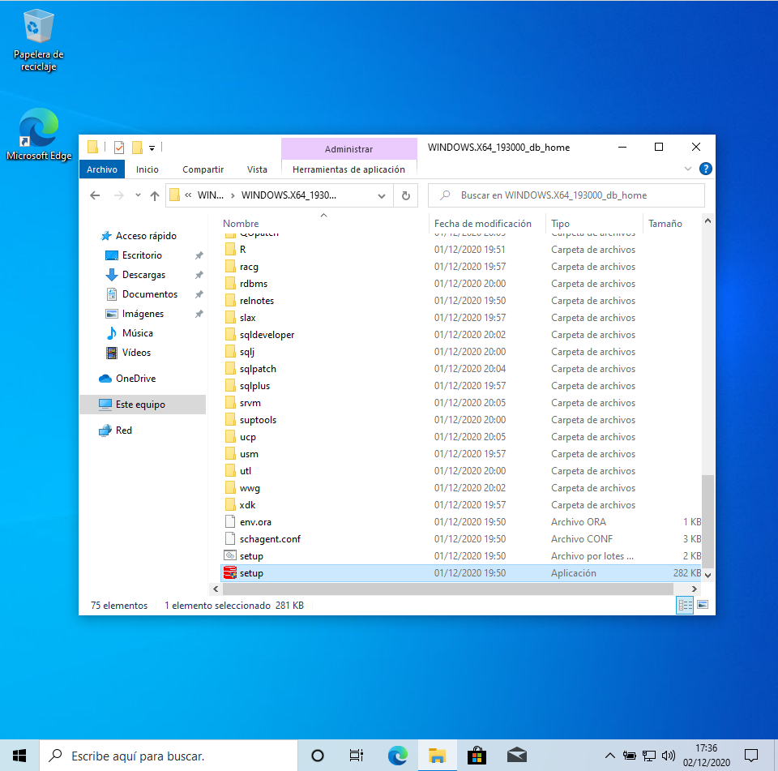
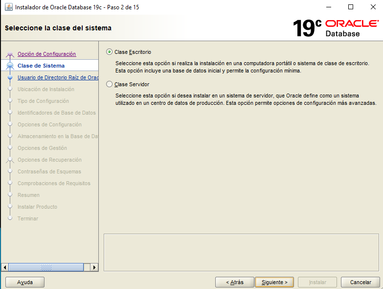
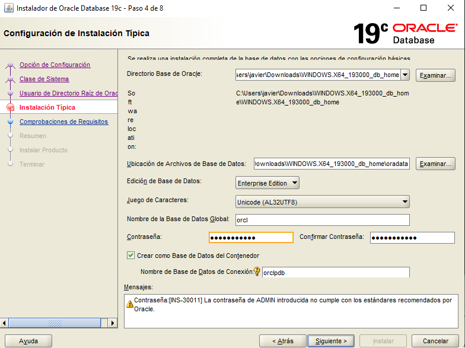
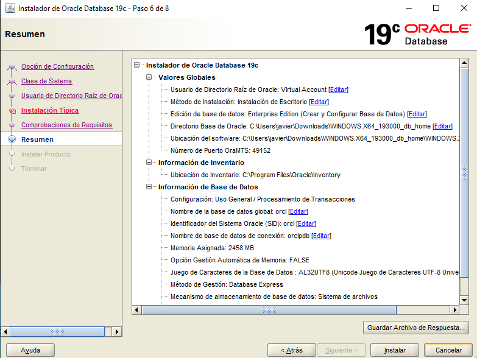
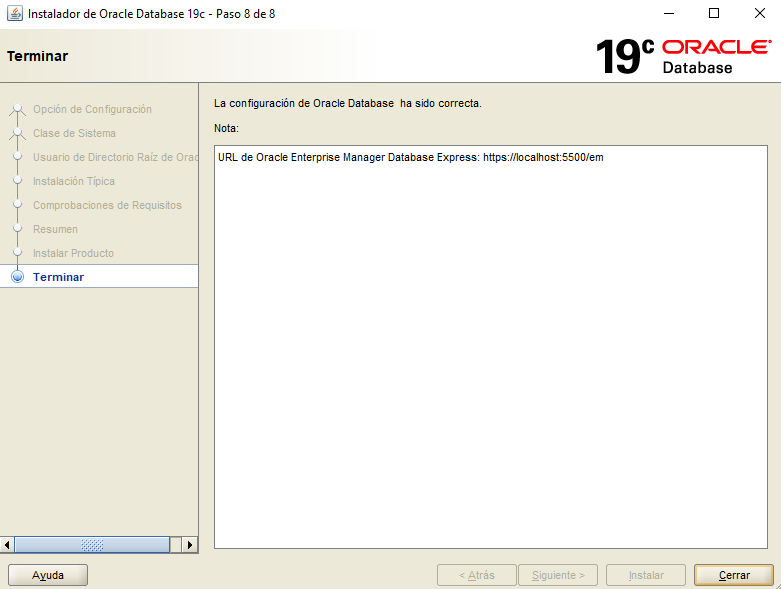
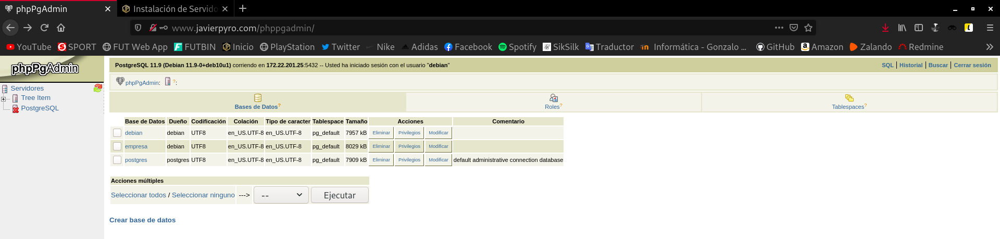

Con esta práctica aprenderéis la instalación y configuración de distintos servidores y clientes de bases de datos.
Tras la instalación de cada servidor, debe crearse una base de datos con al menos tres tablas o colecciones y poblarse de datos adecuadamente. Debe crearse un usuario y dotarlo de los privilegios necesarios para acceder remotamente a los datos. Se proporcionará esta información al resto de los miembros del grupo.
Los clientes deben estar siempre en máquinas diferentes de los respectivos servidores a los que acceden.
Se documentará todo el proceso de configuración de los servidores.
Se aportarán pruebas del funcionamiento remoto de cada uno de los clientes.
Se aportará el código de las aplicaciones realizadas y prueba de funcionamiento de las mismas.
El trabajo constará de las siguientes partes:
- Instalación de un servidor de ORACLE 19c
Vamos a llevar a cabo la instalación de Oracle en su versión 19c. Esta instalación se hará sobre un sistema Windows 10, que se ejecuraá en una máquina virtual conectada en mod puente a mi red local.
Lo primero que debemos hacer, sería descargarnos el paquete de instalación desde la web oficial de Oracle, para realizar la descarga nos hará falta estar registrados como usuarios de Oracle.
Una vez descargado el archivo .zip, tenemos que extraerlo y ahora empezaremos el proceso de instalación.
Debemos buscar en el directorio resultante este ejecutable llamado setup:

Lo abrimos con permisos de administrador y se nos abrirá esta ventana que quedará cargando:

Una vez haya terminado de cargar el instalador de Oracle, se nos abrirá este asistente en el que configuraremos todos los parámetros de los que queremos disponer en nuestro nuevo servidor de base de datos.

Seleccionamos de que tipo de sistema queremos disponer, en mi caso, selecciono la clase de escritorio ya que, si seleccionara la case servidor, el propio Oracle nos realizaría todo el proceso de configuración para el acceso remoto, y esto prefiero mostrar como hacerlo manualmente.

Este paso es bastante importante, pues debemos establecer la contraseña de administrador que poseerá nuestro nuevo Oracle:

En este punto, nos redacta un resumen de las preferencias que hemos escogido, y después de esto, ya comenzará el proceso de instalación:

Una vez terminada la instalación, obtendremos esta ventana:

Bien, ya hemos instalado el servidor Oracle en nuestro sistema, vamos a acceder a él. Para ello vamos a abrir la aplicación SQLPlus. También podemos acceder a través de nuestro cmd con el comando:
sqlplus
Yo accedo mediante esta segunda opción. Como es la primera vez que vamos a acceder, debemos hacerlo mediante el usuario system que nos lo crea por defecto y es administrador. Una vez en él, crearé un usuario personal y le asignaré permisos:
Microsoft Windows [Versión 10.0.19042.572] (c) 2020 Microsoft Corporation. Todos los derechos reservados. C:\Users\javier>sqlplus SQL*Plus: Release 19.0.0.0.0 - Production on Lun Dic 7 16:43:18 2020 Version 19.3.0.0.0 Copyright (c) 1982, 2019, Oracle. All rights reserved. Introduzca el nombre de usuario: system Introduzca la contrase±a: Hora de ┌ltima Conexi¾n Correcta: Sßb Dic 05 2020 18:50:15 +01:00 Conectado a: Oracle Database 19c Enterprise Edition Release 19.0.0.0.0 - Production Version 19.3.0.0.0 SQL> CREATE USER c##javier IDENTIFIED BY contraseña; Usuario creado. SQL> GRANT ALL PRIVILEGES TO c##javier; Concesi¾n terminada correctamente. SQL>
Ya tenemos nuestro usuario disponible, en mi caso, voy a acceder a él y a crear una serie de tablas de prueba y a insertarle unos pocos registros a partir de este script.
- Instalación de un servidor MySQL y configuración para permitir el acceso remoto desde la red local.
Para realizar este ejercicio he decidido crear dos máquinas virtuales conectadas en modo puente a mi red local, las dos poseen un sistema Debian 10, y una actuará como servidor y la otra como cliente. Las he creado con Vagrant, con el siguiente fichero Vagrantfile:
# -*- mode: ruby -*-
# vi: set ft=ruby :
Vagrant.configure("2") do |config|
config.vm.define :servidor do |servidor|
servidor.vm.box="debian/buster64"
servidor.vm.hostname="servidor"
servidor.vm.network :public_network, :bridge=>"wlo1"
end
config.vm.define :cliente do |cliente|
cliente.vm.box="debian/buster64"
cliente.vm.hostname="cliente"
cliente.vm.network :public_network, :bridge=>"wlo1"
end
end
Primeramente nos dirigimos a la máquina servidor, e instalamos el servidor MySQL:
apt install mariadb-server -y
Una vez lo hemos instalado, vamos a configurar una serie de opciones con el comando mysql_secure_installation. Vamos a especificarle una contraseña de root, vamos a eliminar los usuarios anónimos, vamos a especificar que queremos desactivar el acceso remoto a la base de datos, en resumen, vamos a restablecer la base de datos, con nuestras preferencias. Esta es una manera de asegurar el servicio. Aquí muestro el proceso:
root@servidor:/home/vagrant# mysql_secure_installation
NOTE: RUNNING ALL PARTS OF THIS SCRIPT IS RECOMMENDED FOR ALL MariaDB
SERVERS IN PRODUCTION USE! PLEASE READ EACH STEP CAREFULLY!
In order to log into MariaDB to secure it, we'll need the current
password for the root user. If you've just installed MariaDB, and
you haven't set the root password yet, the password will be blank,
so you should just press enter here.
Enter current password for root (enter for none):
OK, successfully used password, moving on...
Setting the root password ensures that nobody can log into the MariaDB
root user without the proper authorisation.
You already have a root password set, so you can safely answer 'n'.
Change the root password? [Y/n] y
New password:
Re-enter new password:
Password updated successfully!
Reloading privilege tables..
... Success!
By default, a MariaDB installation has an anonymous user, allowing anyone
to log into MariaDB without having to have a user account created for
them. This is intended only for testing, and to make the installation
go a bit smoother. You should remove them before moving into a
production environment.
Remove anonymous users? [Y/n] y
... Success!
Normally, root should only be allowed to connect from 'localhost'. This
ensures that someone cannot guess at the root password from the network.
Disallow root login remotely? [Y/n] y
... skipping.
By default, MariaDB comes with a database named 'test' that anyone can
access. This is also intended only for testing, and should be removed
before moving into a production environment.
Remove test database and access to it? [Y/n] y
- Dropping test database...
... Success!
- Removing privileges on test database...
... Success!
Reloading the privilege tables will ensure that all changes made so far
will take effect immediately.
Reload privilege tables now? [Y/n] y
... Success!
Cleaning up...
All done! If you've completed all of the above steps, your MariaDB
installation should now be secure.
Thanks for using MariaDB!
Creo un usuario propio, le asigno privilegios y especifico que sea accesible desde cualquier dirección IP:
root@servidor:/home/vagrant# mysql -u root -p Enter password: Welcome to the MariaDB monitor. Commands end with ; or \g. Your MariaDB connection id is 59 Server version: 10.3.27-MariaDB-0+deb10u1 Debian 10 Copyright (c) 2000, 2018, Oracle, MariaDB Corporation Ab and others. Type 'help;' or '\h' for help. Type '\c' to clear the current input statement. MariaDB [(none)]> CREATE USER 'javier'@'%' IDENTIFIED BY 'contraseña'; Query OK, 0 rows affected (0.001 sec) MariaDB [(none)]> GRANT ALL PRIVILEGES ON *.* TO 'javier'@'%'; Query OK, 0 rows affected (0.001 sec) MariaDB [(none)]> exit Bye
Probamos a acceder al nuevo usuario:
vagrant@servidor:~$ mysql -u javier -p Enter password: Welcome to the MariaDB monitor. Commands end with ; or \g. Your MariaDB connection id is 64 Server version: 10.3.27-MariaDB-0+deb10u1 Debian 10 Copyright (c) 2000, 2018, Oracle, MariaDB Corporation Ab and others. Type 'help;' or '\h' for help. Type '\c' to clear the current input statement. MariaDB [(none)]>
Una vez en el nuevo usuario, vamos a crear una base de datos de prueba llamada empresa:
MariaDB [(none)]> create database empresa; Query OK, 1 row affected (0.000 sec) MariaDB [(none)]> use empresa; Database changed MariaDB [empresa]>
En esta base de datos voy a crear una serie de tablas y a introducirle unos registros de prueba a través de este script.
Vemos las tablas y algunos de los registros creados:
MariaDB [empresa]> show tables; +-------------------+ | Tables_in_empresa | +-------------------+ | Empleados | | Productos | | Tiendas | +-------------------+ 3 rows in set (0.001 sec) MariaDB [empresa]> select * from Tiendas; +--------+-------------------+--------------+--------------+ | Codigo | Nombre | Especialidad | Localizacion | +--------+-------------------+--------------+--------------+ | 000001 | Javi s Pet | Animales | Sevilla | | 000002 | Javi s Sport | Deportes | Cordoba | | 000003 | Javi s Food | Comida | Granada | | 000004 | Javi s Technology | Tecnologia | Cadiz | | 000005 | Javi s Clothes | Ropa | Huelva | +--------+-------------------+--------------+--------------+ 5 rows in set (0.000 sec) MariaDB [empresa]>
Una vez tenemos creado nuestro usuario, con una serie de datos, tenemos que configurar el acceso remoto y probar a acceder a estos datos desde el cliente.
Para configurar el acceso remoto a nuestro servidor MySQL, tenemos que modificar el fichero de configuración /etc/mysql/mariadb.conf.d/50-server.cnf y buscar la línea bind-address = 127.0.0.1 y sustituirla por la siguiente:
bind-address = 0.0.0.0
Esto hará que el servidor escuche las peticiones que provienen de todas las direcciones IP, a diferencia del punto anterior, que estaba configurado para que solo escuchara en localhost.
Hecho esto podemos dirigirnos al cliente, donde vamos a instalar el cliente MySQL:
apt install mariadb-client -y
Una vez instalado, vamos a intentar acceder al usuario javier que hemos creado en el servidor. Recordemos que la dirección IP del servidor es la 192.168.0.32, por tanto, para conectarnos, vamos a emplear este comando:
mysql -h 192.168.0.32 -u javier -p
El parámetro -h indica la dirección del servidor, y los parámetros -u y -p, como ya sabemos, indican el usuario y la autenticación mediante contraseña.
Obtenemos este resultado:
vagrant@cliente:~$ mysql -h 192.168.0.32 -u javier -p Enter password: Welcome to the MariaDB monitor. Commands end with ; or \g. Your MariaDB connection id is 40 Server version: 10.3.27-MariaDB-0+deb10u1 Debian 10 Copyright (c) 2000, 2018, Oracle, MariaDB Corporation Ab and others. Type 'help;' or '\h' for help. Type '\c' to clear the current input statement. MariaDB [(none)]>
Vamos a visualizar los registros de la tabla Tiendas:
MariaDB [(none)]> use empresa; Reading table information for completion of table and column names You can turn off this feature to get a quicker startup with -A Database changed MariaDB [empresa]> select * from Tiendas; +--------+-------------------+--------------+--------------+ | Codigo | Nombre | Especialidad | Localizacion | +--------+-------------------+--------------+--------------+ | 000001 | Javi s Pet | Animales | Sevilla | | 000002 | Javi s Sport | Deportes | Cordoba | | 000003 | Javi s Food | Comida | Granada | | 000004 | Javi s Technology | Tecnologia | Cadiz | | 000005 | Javi s Clothes | Ropa | Huelva | +--------+-------------------+--------------+--------------+ 5 rows in set (0.001 sec) MariaDB [empresa]>
El resultado es el esperado, y por tanto, ya hemos terminado este ejercicio donde hemos configurado el acceso desde un cliente a un servidor remoto MySQL.
- Prueba desde un cliente remoto de SQL*Plus.
He creado otra máquina virtual con Windows 10, que en este caso, actuará como cliente que accederá al servidor creado anteriormente. También está conectada en modo puente a mi red doméstica, por lo que tiene totalmente accesible al servidor y viceversa. En esta segunda máquina he instalado Oracle de igual manera que en la primera.
Servidor:
C:\Users\javier>lsnrctl start LSNRCTL for 64-bit Windows: Version 19.0.0.0.0 - Production on 05-DIC-2020 18:59:49 Copyright (c) 1991, 2019, Oracle. All rights reserved. TNS-01106: El listener que utiliza el nombre de listener LISTENER ya ha sido iniciado C:\Users\javier>
- Realización de una aplicación web en cualquier lenguaje que conecte con un servidor PostgreSQL tras autenticarse y muestre alguna información almacenada en el mismo.
Primeramente voy a instalar un servidor PostgreSQL en una instancia del cloud, para luego acceder de manera remota desde una máquina virtual donde haré la aplicación web.
Instalo en la instancia el servidor:
apt install postgresql-11 -y
Para verificar si la base de datos PostgreSQL está inicializada y verificar el estado de conexión del servidor utilizamos este comando:
root@servidor-postgresql:~# pg_isready /var/run/postgresql:5432 - accepting connections
Una vez instalado se crea un nuevo usuario llamado postgres que tiene rol de superusuario. Vamos a asignarle una contraseña por cuestión de seguridad:
postgres@servidor-postgresql:/root$ psql postgres psql (11.9 (Debian 11.9-0+deb10u1)) Type "help" for help. postgres=# ALTER ROLE postgres PASSWORD 'contraseña'; ALTER ROLE postgres=#
Vamos a crear un nuevo rol, y debemos hacerlo a través de este usuario.
Utilizamos el argumento --interactive para que nos pregunte si el nuevo rol será de administrador o no:
debian@servidor-postgresql:~$ sudo -u postgres createuser --interactive Enter name of role to add: debian Shall the new role be a superuser? (y/n) y
Ahora creamos una base de datos con el mismo nombre que el rol que hemos creado y nos conectamos:
debian@servidor-postgresql:~$ psql psql (11.9 (Debian 11.9-0+deb10u1)) Type "help" for help. debian=# ALTER ROLE debian PASSWORD 'contraseña'; debian=# CREATE DATABASE empresa; CREATE DATABASE debian=# GRANT ALL PRIVILEGES ON DATABASE empresa TO debian; GRANT debian=# \c empresa You are now connected to database "empresa" as user "debian". empresa=#
Vamos a crear unas tablas y unos registros, para ello, utilizamos el siguiente script.
Si comprobamos las tablas:
empresa=# \d
List of relations
Schema | Name | Type | Owner
--------+-----------+-------+--------
public | empleados | table | debian
public | productos | table | debian
public | tiendas | table | debian
(3 rows)
Ahora vamos a permitir el acceso remoto al servidor. Para ello debemos dirigirnos al fichero /etc/postgresql/11/main/postgresql.conf y descomentamos la línea listen_addresses = 'localhost' y sustituimos el valor localhost por la dirección que queremos que se conecte remotamente o si queremos habilitar conexiones desde todas las direcciones, establecemos el valor *. En mi caso, la línea quedaría así:
listen_addresses = '*'
Nos quedaría modificar un fichero de configuración para terminar de habilitar el acceso remoto. Tenemos que editar el fichero /etc/postgresql/11/main/pg_hba.conf y en la línea que hace referencia a las direcciones IPv4, modificar el valor 127.0.0.1/32 por all, de manera que quedaría así:
# IPv4 local connections: host all all all md5
Ya hemos configurado todo lo necesario para poder acceder remotamente a nuestro servidor PostgreSQL. Vamos a dirigirnos a la máquina virtual y vamos a instalar el cliente y a intentar acceder remotamente a la base de datos empresa:
apt install postgresql-client -y
Intentamos acceder de manera remota. Utilizamos los parámetros -h para indicar la dirección IP del servidor, -U para indicar el usuario y -d para indicar la base de datos:
root@buster:/etc/apache2/conf-available# psql -h 172.22.201.25 -U debian -d empresa
Password for user debian:
psql (11.9 (Debian 11.9-0+deb10u1))
SSL connection (protocol: TLSv1.3, cipher: TLS_AES_256_GCM_SHA384, bits: 256, compression: off)
Type "help" for help.
empresa=# \d
List of relations
Schema | Name | Type | Owner
--------+-----------+-------+--------
public | empleados | table | debian
public | productos | table | debian
public | tiendas | table | debian
(3 rows)
empresa=# select * from tiendas;
codigo | nombre | especialidad | localizacion
--------+-------------------+--------------+--------------
000001 | Javi s Pet | Animales | Sevilla
000002 | Javi s Sport | Deportes | Cordoba
000003 | Javi s Food | Comida | Granada
000004 | Javi s Technology | Tecnologia | Cadiz
000005 | Javi s Clothes | Ropa | Huelva
(5 rows)
Vemos como tenemos acceso remoto y tenemos acceso a los datos almacenados.
En este punto, solo nos quedaría configurar la aplicación web.
Para servir una página web lógicamente necesitamos un servidor web. Yo he decidido utilizar Apache:
apt install apache2 apache2-utils -y
Instalamos los paquetes necesarios para poder acceder desde una aplicación web:
apt install php libapache2-mod-php php-cli php-pgsql phppgadmin -y
En este punto solo nos quedaría hacer unas pequeñas modificaciones en algunos ficheros de configuración.
El primer cambio debemos hacerlo en el fichero /etc/apache2/conf-available/phppgadmin.conf y comentar la línea Require local.
Después de hacer esto, en el fichero /etc/phppgadmin/config.inc.php debemos buscar la siguiente línea:
$conf['extra_login_security'] = true;
Tenemos que asegurarnos que su valor sea igual a true, y añadir estas líneas que indican la dirección del servidor y el puerto de la máquina remota:
$conf['servers'][1]['host'] = '172.22.201.25'; $conf['servers'][1]['port'] = 5432;
Si accedemos a la dirección .../phppgadmin en nuestro navegador e iniciamos sesión con las credenciales de nuestro usuario de la base de datos, obtendremos un resultado como éste:

Podemos ver como nuestra aplicación nos muestra las bases de datos existentes en el servidor, y podemos eliminarlas, modificarlas y establecer privilegios, entre otras cosas, ya que también podemos realizar consultas, ...
- Instalación de una herramienta de administración web para MongoDB y prueba desde un cliente remoto.
.